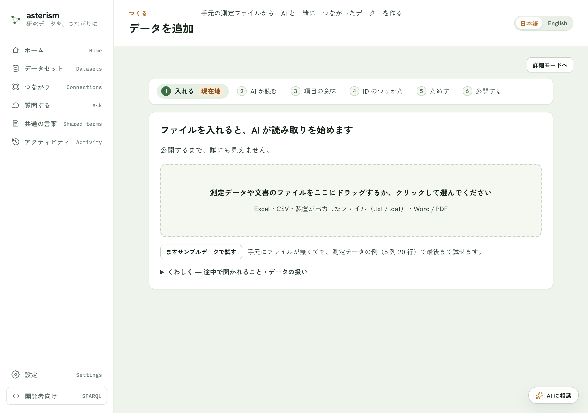
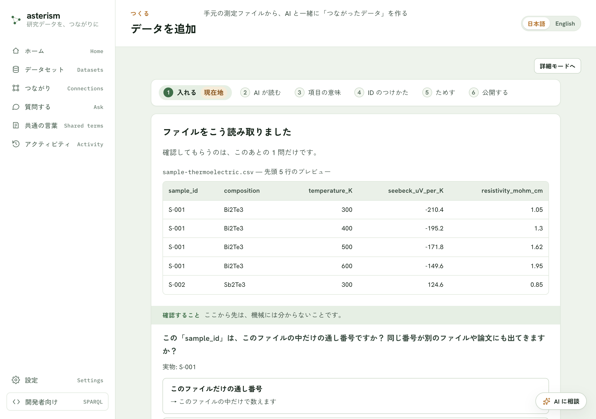

データの追加 — 対応ファイルと読み取りの確認
「入れる」ステップで置けるファイルの種類と、そのあとの「読み取りの確認」画面でできることをまとめます。手順そのものはgetting-started.md を参照してください。
対応しているファイル形式
- Excel・CSV・装置が出力したファイル（.txt / .dat）
- Word / PDF
- JSON
{kind=link}

種類のちがうファイルが混ざっているときは、表（Excel / CSV / 装置ファイル）・JSON・文書（Word / PDF）を分けて置いてください。置いたら読み取りが始まりますが、公開するまで内容は誰にも見えません。
サンプルデータで試す
手元にファイルが無いときは「まずサンプルデータで試す」ボタンで最後まで試せます。測定データの例（5 列 20 行）が用意され、あとでデータセットのページから消せます。
読み取りの確認でできること
ファイルを置くと、先頭 5 行のプレビューが表示され、正しく読み取れているか確かめられます。表がずれているときは「表が正しく読めていない？」を開くと、次の内容をその場で変えられ、プレビューが即座に描き直されます。
- 列の分けかた（カンマ／タブ／セミコロン／スペース）
- 表が始まる前の行数
- 文字化けの直しかた（Excel（日本語）／UTF-8）
{kind=link}

AI からの質問に答える
読み取った内容を AI が確認し、あなたしか知らないことだけを聞いてきます。たとえば次のような質問です。
- 表の前にあった条件らしい行を、表の各行と一緒に記録するかどうか
- 複数のファイルをつなぐ共通の列はどれか
表の前にあった値に項目名が付いていないときは、名前を付ける欄が出ることもあります。分からなければ空欄のまま進め、あとから直せます。
Excel の複数シート
Excel ファイルに表が複数あるときは、使うものを選びます。グラフ用・メモ用のシートは外しておくと、このあとの確認が楽になります。
表の形をととのえる
AI の質問に答えて「この内容で進む」を押したとき、1 つのセルに複数の値が並んでいる列や、値の種類そのものが列の値になっている列（たとえば「物性名」と「値」が別々の列に分かれた表）が見つかると、「表の形をととのえます」画面が表示されます。何も見つからなければこの画面は出ず、そのまま次に進みます。
見つかった形ごとに 1 つのタブが並びます。タブの左端には、まだ決めていないことがあるときは ⚠、確認が済んでいるときは ✓ が付きます。画面の上には「入力 ○○ 行 → 派生表 ○○ 行・捨てた要素 ○ 個・切った要素 ○ 個」という帯が常に表示され、判断表を変えるたびにこの数字も更新されます。
- 使う／使わない — 同じ種類の値の、綴りのゆれをまとめた表です。使う表にはチェックが入っています。外すと、その表は作られません（元の表にはそのまま残ります）。
- 同じ単位とみなす — 「別の単位で書かれた行」の欄に、同じ種類の値だけれど単位の書きかたが違う行の候補が出ることがあります。これは機械が「同じだ」と決めるのではなく、あなたが確かめて選ぶ判断です。押すと、その行も表に含まれるようになります。
- 別の表に合流 — よく似た表を 1 つにまとめたいときに使います。合流させた側の表は使われなくなります。
- 追加で持ち回る列 — 派生表にも残しておきたい、元の表の列を選べます。
準備ができたら、次のどちらかを選びます。
- ととのえて進む — 選んだ内容で表を作ってから、次の画面（AI が読み取る意味づけ）に進みます。
- このまま進む — 表の形はととのえず、元の表のまま次に進みます。あとからやり直したいときは、「入れる」からもう一度やり直してください。
Word / PDF などの文書
Word・PDF は AI を使わずそのまま取り込めます。文書名を付けて取り込み、読み取りが終わったら公開すると、文ごとに検索・引用できるようになります。PDF はレイアウトも読むため、数分かかることがあります。文字が画像になっているスキャン画像の PDF は読み取れません。
前回の続き
前に置いたファイルがブラウザに残っているときは、「このファイルの続きから使う」か「新しいファイルを置く」かを選べます。同じファイルをもう一度置くと、前回の確認の続きから再開できます。
書き込みに利用許可コードが必要な環境
このサーバへの書き込みに利用許可コードが必要な環境では、設定に入力すると先に進めます。詳しい手順は settings.md を参照してください。
関連
- 「入れる」からあとの手順全体は getting-started.md
- 取り込んだあとの管理・公開は datasets.md